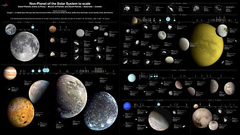

Un satélite natural es un cuerpo celeste que orbita alrededor de un planeta. Generalmente el satélite es más
pequeño y acompaña al planeta en su órbita alrededor de su estrella madre. A diferencia de los fragmentos que
orbitan formando un anillo, es el único cuerpo en su órbita.
Mercurio
el planeta más pequeño e interior, no tiene lunas, o al menos ninguna que pueda detectarse hasta un diámetro de
1,6 km. Durante muy poco tiempo en 1974, se pensó que Mercurio tenía una luna.
Venus
tampoco tiene lunas, aunque desde el siglo XVII han circulado informes de una luna alrededor de
Venus.
La Tierra
tiene una Luna, la luna más grande de cualquier planeta rocoso del Sistema Solar. La Tierra
también tiene al menos dos co-orbitales: los asteroides 3753 Cruithne y 2002 AA29; sin embargo, dado que no
orbitan alrededor de la Tierra, no se consideran lunas.
Marte
tiene dos lunas conocidas, Fobos y Deimos ("miedo" y "pavor", en honor a los asistentes de Ares, el
dios griego de la guerra, equivalente al Marte romano). Las búsquedas de más satélites no han tenido éxito, lo que
sitúa el radio máximo de cualquier otro satélite en 90 m.
Júpiter
tiene 79 lunas con órbitas conocidas, de las cuales 72 han recibido designaciones permanentes; de
ellos, 57 han sido nombrados. Sus ocho lunas regulares se agrupan en las lunas galileanas del tamaño de un planeta
y el grupo Amaltea, mucho más pequeño. Llevan el nombre de los amantes de Zeus, el equivalente griego de Júpiter.
Sus 71 lunas irregulares conocidas se organizan en dos categorías: progradas y retrógradas. Los satélites
progrados consisten en el grupo Himalia y otros tres en grupos de uno. Las lunas retrógradas se agrupan en los
grupos Carme, Ananke y Pasiphae.
Saturno
tiene 82 lunas con órbitas conocidas; 53 de ellos tienen nombre. La mayoría de ellos son bastante
pequeños. Siete lunas son lo suficientemente grandes como para estar en equilibrio hidrostático, incluida Titán,
la segunda luna más grande del Sistema Solar. Incluyendo estas grandes lunas, 24 de las lunas de Saturnoo son
regulares y tradicionalmente llevan el nombre de titanes u otras figuras asociadas con el mitológico Saturno. Los
58 restantes, todos pequeños, son irregulares, y se clasifican por sus características orbitales en grupos inuit,
nórdico y galo, y sus nombres se eligen entre las mitologías correspondientes. Los anillos de Saturno están
formados por objetos helados que varían en tamaño desde un centímetro hasta cientos de metros, cada uno de los
cuales se encuentra en su propia órbita alrededor del planeta. Por lo tanto, no se puede dar un número preciso de
lunas de Saturno, ya que no existe un límite objetivo entre los innumerables pequeños objetos anónimos que forman
el sistema de anillos de Saturno y los objetos más grandes que han sido nombrados como lunas. Al menos 150 lunas
menores incrustadas en los anillos han sido detectadas por la perturbación que crean en el material del anillo
circundante, aunque se cree que esto es solo una pequeña muestra de la población total de tales objetos.
Urano
tiene 27 lunas, cinco de las cuales son lo suficientemente masivas como para haber alcanzado el
equilibrio hidrostático. Hay 13 lunas que orbitan dentro del sistema de anillos de Urano y otras nueve lunas
exteriores irregulares. A diferencia de la mayoría de las lunas planetarias, que llevan el nombre de la
antigüedad, todas las lunas de Urano llevan el nombre de personajes de las obras de Shakespeare y El rizo robado,
de Alexander Pope.
<2>Neptuno tiene 14 lunas; el más grande, Tritón, representa más del 99,5 por ciento de toda la masa que
orbita el planeta. Tritón es lo suficientemente grande como para haber alcanzado el equilibrio hidrostático,
pero, únicamente para una luna grande, tiene una órbita retrógrada, lo que sugiere que fue un planeta enano
capturado. Neptuno también tiene siete satélites regulares internos conocidos y seis satélites irregulares
externos.
Plutón
tiene cinco lunas. Su luna más grande, Caronte, llamada así por el barquero que llevó almas a
través del río Estigia, es más de la mitad del tamaño del propio Plutón y lo suficientemente grande como para
orbitar un punto fuera de la superficie de Plutón. En efecto, cada uno orbita al otro, formando un sistema
binario al que se hace referencia informalmente como planeta doble enano. Las otras cuatro lunas de Plutón, Nix,
Hydra, Kerberos y Styx son mucho más pequeñas y orbitan el sistema Plutón-Caronte.